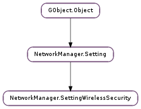

| static | new() |
| add_group(group) | |
| add_pairwise(pairwise) | |
| add_proto(proto) | |
| clear_groups() | |
| clear_pairwise() | |
| clear_protos() | |
| get_auth_alg() | |
| get_group(i) | |
| get_key_mgmt() | |
| get_leap_password() | |
| get_leap_password_flags() | |
| get_leap_username() | |
| get_num_groups() | |
| get_num_pairwise() | |
| get_num_protos() | |
| get_pairwise(i) | |
| get_proto(i) | |
| get_psk() | |
| get_psk_flags() | |
| get_wep_key(idx) | |
| get_wep_key_flags() | |
| get_wep_key_type() | |
| get_wep_tx_keyidx() | |
| remove_group(i) | |
| remove_pairwise(i) | |
| remove_proto(i) | |
| set_wep_key(idx, key) |
| Name | Type | Flags | Description |
|---|---|---|---|
| auth-alg | str | r/w | When WEP is used (ie, key-mgmt = ‘none’ or ‘ieee8021x’) indicate the 802.11 authentication algorithm required by the AP here. One of ‘open’ for Open System, ‘shared’ for Shared Key, or ‘leap’ for Cisco LEAP. When using Cisco LEAP (ie, key-mgmt = ‘ieee8021x’ and auth-alg = ‘leap’) the ‘leap-username’ and ‘leap-password’ properties must be specified. |
| key-mgmt | str | r/w | Key management used for the connection. One of ‘none’ (WEP), ‘ieee8021x’ (Dynamic WEP), ‘wpa-none’ (WPA-PSK Ad-Hoc), ‘wpa-psk’ (infrastructure WPA-PSK), or ‘wpa-eap’ (WPA-Enterprise). This property must be set for any WiFi connection that uses security. |
| leap-password | str | r/w | The login password for legacy LEAP connections (ie, key-mgmt = ‘ieee8021x’ and auth-alg = ‘leap’). |
| leap-password-flags | int | r/w | Flags indicating how to handle the LEAP password. |
| leap-username | str | r/w | The login username for legacy LEAP connections (ie, key-mgmt = ‘ieee8021x’ and auth-alg = ‘leap’). |
| psk | str | r/w | Pre-Shared-Key for WPA networks. If the key is 64-characters long, it must contain only hexadecimal characters and is interpreted as a hexadecimal WPA key. Otherwise, the key must be between 8 and 63 ASCII characters (as specified in the 802.11i standard) and is interpreted as a WPA passphrase, and is hashed to derive the actual WPA-PSK used when connecting to the WiFi network. |
| psk-flags | int | r/w | Flags indicating how to handle the WPA PSK key. |
| wep-key0 | str | r/w | Index 0 WEP key. This is the WEP key used in most networks. See the ‘wep-key-type’ property for a description of how this key is interpreted. |
| wep-key1 | str | r/w | Index 1 WEP key. This WEP index is not used by most networks. See the ‘wep-key-type’ property for a description of how this key is interpreted. |
| wep-key2 | str | r/w | Index 2 WEP key. This WEP index is not used by most networks. See the ‘wep-key-type’ property for a description of how this key is interpreted. |
| wep-key3 | str | r/w | Index 3 WEP key. This WEP index is not used by most networks. See the ‘wep-key-type’ property for a description of how this key is interpreted. |
| wep-key-flags | int | r/w | Flags indicating how to handle the WEP keys. |
| wep-key-type | int | r/w | Controls the interpretation of WEP keys. Allowed values are 1 (interpret WEP keys as hexadecimal or ASCII keys) or 2 (interpret WEP keys as WEP Passphrases). If set to 1 and the keys are hexadecimal, they must be either 10 or 26 characters in length. If set to 1 and the keys are ASCII keys, they must be either 5 or 13 characters in length. If set to 2, the passphrase is hashed using the de-facto MD5 method to derive the actual WEP key. |
| wep-tx-keyidx | int | r/w | When static WEP is used (ie, key-mgmt = ‘none’) and a non-default WEP key index is used by the AP, put that WEP key index here. Valid values are 0 (default key) through 3. Note that some consumer access points (like the Linksys WRT54G) number the keys 1 - 4. |
None
| Name | Type | Access |
|---|---|---|
| parent | NetworkManager.Setting | r |
Bases: NetworkManager.Setting
| Returns: | the new empty NetworkManager.SettingWirelessSecurity object |
|---|---|
| Return type: | NetworkManager.Setting |
Creates a new NetworkManager.SettingWirelessSecurity object with default values.
| Parameters: | group (str) – the encryption algorithm to add, one of “wep40”, “wep104”, “tkip”, or “ccmp” |
|---|---|
| Returns: | True if the algorithm was added to the list, False if it was already in the list |
| Return type: | bool |
Adds an encryption algorithm to the list of allowed groupwise encryption algorithms. If the list is not empty, then only access points that support one or more of the encryption algorithms in the list will be considered compatible with this connection.
| Parameters: | pairwise (str) – the encryption algorithm to add, one of “wep40”, “wep104”, “tkip”, or “ccmp” |
|---|---|
| Returns: | True if the algorithm was added to the list, False if it was already in the list |
| Return type: | bool |
Adds an encryption algorithm to the list of allowed pairwise encryption algorithms. If the list is not empty, then only access points that support one or more of the encryption algorithms in the list will be considered compatible with this connection.
| Parameters: | proto (str) – the protocol to add, one of “wpa” or “rsn” |
|---|---|
| Returns: | True if the protocol was new and and was added to the allowed protocol list, or False if it was already in the list |
| Return type: | bool |
Adds a WiFi security protocol (one of “wpa” or “rsn”) to the allowed list; only protocols in this list will be used when finding and connecting to the WiFi network specified by this connection. For example, if the protocol list contains only “wpa” but the access point for the SSID specified by this connection only supports WPA2/RSN, the connection cannot be used with the access point.
Removes all algorithms from the allowed list. If there are no algorithms specified then all groupwise encryption algorithms are allowed.
Removes all algorithms from the allowed list. If there are no algorithms specified then all pairwise encryption algorithms are allowed.
Removes all protocols from the allowed list. If there are no protocols specified then all protocols are allowed.
| Returns: | the NetworkManager.SettingWirelessSecurity :auth-alg property of the setting |
|---|---|
| Return type: | str |
| Parameters: | i (int) – index of an item in the allowed groupwise encryption algorithm list |
|---|---|
| Returns: | the groupwise encryption algorithm at index i |
| Return type: | str |
Returns the allowed groupwise encryption algorithm from allowed algorithm list.
| Returns: | the NetworkManager.SettingWirelessSecurity :key-mgmt property of the setting |
|---|---|
| Return type: | str |
| Returns: | the NetworkManager.SettingWirelessSecurity :leap-password property of the setting |
|---|---|
| Return type: | str |
| Returns: | the NetworkManager.SettingSecretFlags pertaining to the NetworkManager.SettingWirelessSecurity :leap-password |
|---|---|
| Return type: | NetworkManager.SettingSecretFlags |
| Returns: | the NetworkManager.SettingWirelessSecurity :leap-username property of the setting |
|---|---|
| Return type: | str |
| Returns: | the number of groupwise encryption algorithms in the allowed list |
|---|---|
| Return type: | int |
| Returns: | the number of pairwise encryption algorithms in the allowed list |
|---|---|
| Return type: | int |
| Returns: | the number of security protocols this connection allows when connecting to secure WiFi networks |
|---|---|
| Return type: | int |
| Parameters: | i (int) – index of an item in the allowed pairwise encryption algorithm list |
|---|---|
| Returns: | the pairwise encryption algorithm at index i |
| Return type: | str |
Returns the allowed pairwise encryption algorithm from allowed algorithm list.
| Parameters: | i (int) – an index into the protocol list |
|---|---|
| Returns: | the protocol at index i |
| Return type: | str |
| Returns: | the NetworkManager.SettingWirelessSecurity :psk property of the setting |
|---|---|
| Return type: | str |
| Returns: | the NetworkManager.SettingSecretFlags pertaining to the NetworkManager.SettingWirelessSecurity :psk |
|---|---|
| Return type: | NetworkManager.SettingSecretFlags |
| Parameters: | idx (int) – the WEP key index (0..3 inclusive) |
|---|---|
| Returns: | the WEP key at the given index |
| Return type: | str |
| Returns: | the NetworkManager.SettingSecretFlags pertaining to the all WEP keys |
|---|---|
| Return type: | NetworkManager.SettingSecretFlags |
| Returns: | the NetworkManager.SettingWirelessSecurity :wep-key-type property of the setting |
|---|---|
| Return type: | NetworkManager.WepKeyType |
| Returns: | the NetworkManager.SettingWirelessSecurity :wep-tx-keyidx property of the setting |
|---|---|
| Return type: | int |
| Parameters: | i (int) – the index of an item in the allowed groupwise encryption algorithm list |
|---|
Removes an encryption algorithm from the allowed groupwise encryption algorithm list.
| Parameters: | i (int) – the index of an item in the allowed pairwise encryption algorithm list |
|---|
Removes an encryption algorithm from the allowed pairwise encryption algorithm list.
| Parameters: | i (int) – index of the protocol to remove |
|---|
Removes a protocol from the allowed protocol list.
| Parameters: |
|
|---|
Sets a WEP key in the given index.